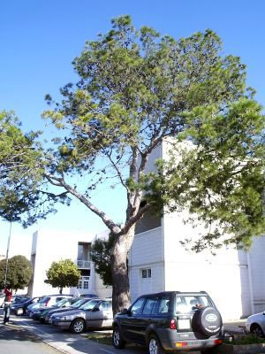
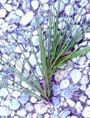
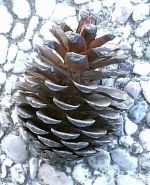

| Pinus halepensis
Miller, Gard. Dict., ed. 8, n. 8
(1768) |
Pináceas Pinofitas |
| Pino carrasco, pino blanquillo | Árbol aciculifolio |
|
Árbol perennifolio, monoico, de hasta 22 m, aunque suele presentar menos altura, (nuestros ejemplares miden 6 y 14 m); corteza blanquecina plateada en la juventud, pero de tonos más oscuros y enrojecidos cuando llega a la madurez; copa laxa, inicialmente piramidal y a partir de los 20 años adquiere una forma globosa Hojas aciculares, de 6-12 (14) cm x 0,7-0,9 mm, agudas (pero no pinchudas), agrupadas de 2 en 2, envueltas en la base por una vaina membranosa y concentradas en la parte final de la rama, flexibles, de color verde claro; duran unos 2 años. Piñas femeninas de hasta 14 cm, con escamas de ápice redondeado, poco prominente, de color marrón brillante; persisten varios años sobre el árbol; semilla (piñón) gris oscuro provista de un ala tres veces más larga que ella. Florece entre Marzo y Mayo; las piñas maduran en el verano del segundo año, dispersando los piñones en la primavera del tercer año. |
 Fotos: Rosa Mª Domínguez Rivas, 2005 |
|   Fotos: Rosa Mª Domínguez Rivas, 2005 |
Observaciones: Su nombre genérico deriva del celta pen que significa cabeza o montaña, y el específico es el patronímico de la ciudad Siria de Alepo, uno de los puertos comerciales más importantes del mundo antiguo. Es un árbol muy resistente a la sequía y apto para colonizar suelos áridos y degradados. Presenta un mecanismo denominado “raíces de lluvia” que le permite aprovechar recursos hídricos intermitentes mediante un crecimiento temporal de las raíces superficiales. Se usa para repoblar en zonas con clima mediterráneo y se aprovechan su madera y su resina. |
|
Área de origen.- Región Mediterránea |
|
|
Uso en el campus: Dos ejemplares como árboles ornamentales. |
Localización:
E.T.S.
Ingeniería
Informática: |
|
Rosa María Domínguez Rivas & Carlos Romero Zarco (2006) |
|